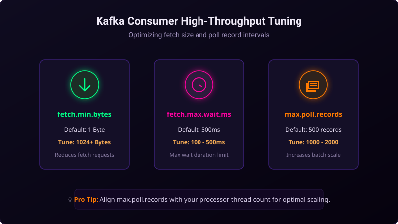

In high-volume streaming systems, optimizing producers is only half the battle. If your consumer applications are slow, partition lag will build up, delaying downstream processes. To process data quickly, your consumers must read messages in efficient batches.
By default, Kafka Consumers poll for records frequently. By tuning how the consumer requests data, you can reduce network handshakes and CPU utilization on both clients and brokers. Let's explore the key properties to optimize.

Imagine loading boxes from a warehouse shelf onto a hand trolley:
- Low Latency (Default): You walk to the shelf, grab one small box, and walk all the way back to the delivery truck. You repeat this trip for every item. You spend 95% of your day walking back and forth (network overhead).
- High Throughput: You establish a rule: "I will not walk back to the truck until my trolley has at least 10 items (
fetch.min.bytes) or I have waited at least 10 minutes (fetch.max.wait.ms)." When you poll the shelf, you load a large stack of 50 boxes at once (max.poll.records). You make far fewer trips and move much more volume.
Three Critical Consumer Settings
1. fetch.min.bytes (Default: 1 Byte)
This setting controls the minimum amount of data the broker must return in a single fetch request. If set to 1, the broker returns data as soon as a single byte is available. By increasing this to **1024 or 4096 bytes** (or higher), you force the broker to wait until a healthy batch of data builds up, reducing the number of round-trip fetch requests.
2. fetch.max.wait.ms (Default: 500ms)
If you increase fetch.min.bytes, the broker might hold back your fetch request if traffic is low. To prevent the consumer from waiting indefinitely for data, fetch.max.wait.ms sets a time limit. If traffic is slow, the broker will return whatever data it has once this timer expires, balancing latency and throughput.
3. max.poll.records (Default: 500 records)
This controls the maximum number of records returned in a single call to consumer.poll(). If your processing loop is very fast, increase this to **1000 or 2000** to pull and process larger batches in memory. Caution: Ensure your consumer can finish processing the batch before max.poll.interval.ms expires to avoid false rebalances!
High Throughput Java Configuration Example
Here is how to set up your Kafka Consumer properties in Java for maximum throughput:
Properties props = new Properties();
props.put("bootstrap.servers", "localhost:9092");
props.put("group.id", "throughput-group");
props.put("key.deserializer", "org.apache.kafka.common.serialization.StringDeserializer");
props.put("value.deserializer", "org.apache.kafka.common.serialization.StringDeserializer");
// High Throughput Tuning:
props.put("fetch.min.bytes", "8192"); // Broker waits for 8KB of data
props.put("fetch.max.wait.ms", "200"); // Max fetch wait of 200ms
props.put("max.poll.records", "1500"); // Poll up to 1500 records per loop
props.put("enable.auto.commit", "false"); // Disable auto commits
KafkaConsumer<String, String> consumer = new KafkaConsumer<>(props);Conclusion
Consumer throughput is about efficiency. By waiting for slightly larger payload packets (fetch.min.bytes) and processing larger arrays of records in memory (max.poll.records), you reduce CPU overhead and network chat, allowing your applications to clear backlogs quickly.